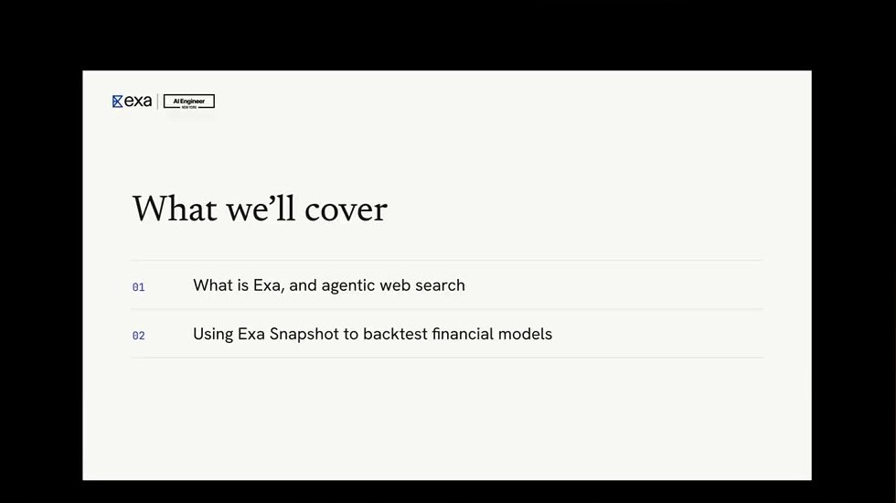

Agents search in dense, tireless bursts rather than two-word queries
Most engineers in the room raised their hands when Ahern asked who now delegates everyday searches to ChatGPT, Claude, or coding agents instead of typing keywords into Google. That shift changes search traffic mechanics. A human types two or three words, checks the top links, tries one rewording, and gives up; an agent writes detailed semantic descriptions, runs many diverse queries per task, and maps out an entire topic before answering.
Because Exa operates its own crawler, index, embedding models, and retrieval stack, it serves those dense query patterns directly inside developer tools like Cursor and presentation builders like Gamma (such as pulling 2018 Apple SEC figures mid-workflow), as well as financial institutions. Hedge funds hunt for market alpha, insurers vet counterparties to sharpen risk models, and venture firms scan the open web for early startup traction long before companies appear in curated databases.

“They tend to describe what they want to search in great detail, execute many searches, and want to understand the space more fully before they pass, and that means that they do way more searches on a post basis.”00:00:00
- Humans issue short keyword queries and stop early; agents run high volumes of detailed, exploratory searches per task.
- Owning the crawl, embeddings, and retrieval index lets Exa tailor search to multi-step agentic workloads.
- Financial teams use open-web agentic search for trading signals, underwriting risk, and early startup discovery.
Evidence: transcript 00:00:00
Trajectory cost matters more than single-query price
When an agent executes dozens of searches inside one loop, three properties govern whether the workflow holds up: retrieval quality, total trajectory token cost, and latency across both fast lookups and deep research. Higher retrieval quality reduces wasted tool calls and keeps bad context from derailing downstream reasoning, which prompted Exa to ship its ATLAS benchmark on October 8 to evaluate search tools independently of which model calls them.
On cost, Ahern stressed that per-call API pricing hides the real bill: flooding an agent's context window with full web pages inflates input token spend on every subsequent step of the trajectory. Exa's Dynamic Highlights selects the exact relevant snippets across all returned results rather than dumping full pages, delivering higher end-task quality at 95% fewer tokens. At the latency extremes, owning the index enables both sub-second retrieval and Exa Agent Ultra for long-running deep research.
“we now do that across all of the search results, which means that you can actually get higher quality results at ninety-five percent fewer tokens than you would at full-page text.”00:03:31
- Fewer, cleaner search calls improve trajectory accuracy; Exa's ATLAS benchmark isolates search quality from model choice.
- Dynamic Highlights extracts targeted snippets across every result, cutting context tokens by 95% versus full-page text.
- The same owned index supports low-latency tool calls and long-horizon research via Exa Agent Ultra.
Evidence: transcript 00:03:31 · watch the Dynamic Highlights & ATLAS overview
Freshness crawls became a 400-billion-page time machine
Every search engine re-crawls URLs continuously to keep its live index fresh. Instead of overwriting prior states, Exa retained each dated capture, releasing Exa Snapshot with more than 400 billion historical page versions searchable at daily granularity.
Engineers can query that archive through two interfaces: content versioning, where you pass a known URL and a cutoff date (snapshotAsOf) to retrieve the page exactly as it stood on or before that day, and versioned semantic search, which runs an open-ended query against the web as it existed at a chosen point in the past. Live search engines always see post-event press releases and retrospective commentary; cutting off the index at a historical date removes future knowledge so predictive pipelines can be tested without lookahead leakage.
“So just recently, we released Exa Snapshot. It's 400 billion plus snapshots of the web, and you can search them by day.”00:06:29
- Continuous freshness crawls produced an archive of 400B+ timestamped web snapshots indexed by day.
- Content versioning fetches a specific URL as of a past date; versioned search runs semantic queries against the historical web.
- Enforcing a strict date cutoff blocks post-event outcomes from leaking into historical evaluations.
Evidence: transcript 00:06:29, 00:07:50
Auditing OpenAI's run rate and acquisition signals before the headlines
To make point-in-time search concrete, Ahern showed a side-by-side query for "OpenAI Net annualized Run Rate" comparing a Snapshot search frozen on October 1, 2026 against current live results. Early October coverage projected roughly a $70 billion annualized figure (transcribed once as "seventy million" before Ahern repeated "seventy billion"), whereas subsequent reporting separated cloud-provider pass-through gross revenue from net annualized run rate, revising estimates closer to $50 billion.
With versioned search, an analyst or agent builder can rewind before the critical think-piece broke and check whether an accounting footnote, filing, or lesser-known outlet already held the discrepancy, then test whether an agent configured today would have spotted it across 50 historical cases and a separate holdout set. The same discipline applies to M&A prediction: querying live search trivially finds the acquisition announcement, whereas testing at 30 days, 7 days, and 1 day before the deal reveals whether pre-announcement signals were genuinely predictive.
“So I'm gonna go like one day before the announcement, seven days before the announcement, a month before the announcement, and see whether I could or could not predict it, right?”00:07:50
- Comparing October 1 versus current results for OpenAI's run rate isolates what evidence existed before the $70B-to-$50B accounting revision went mainstream.
- Querying 1, 7, and 30 days prior to company acquisitions tests discoverability without deal-announcement leakage.
- Fifty-company sample sets paired with out-of-sample holdouts turn one-off anecdotes into measurable recall.
Evidence: transcript 00:07:50 · watch the Oct 1 vs live OpenAI run-rate comparison
Three ways teams backtest web signals into models and agents
Across financial and enterprise users, Ahern sees three distinct backtesting patterns emerging with Snapshot. First, traditional ML teams pull historical unstructured web pages, such as past SaaS pricing tiers, terms-and-conditions changes, or dated sentiment, and convert them into structured numeric arrays for decision trees or tabular models where historical web pages were previously lost.
Second, and most common right now, teams bolt one or two agentic research features onto an existing quantitative model, such as running a multi-query adverse-media scan or estimating headcount and revenue across an equity universe as of four months ago when onboarding a portfolio, so they can prove empirical lift against their baseline process rather than taking AI value on faith. Third, startups building end-to-end prediction agents wrap the agent's web search tool in Snapshot cutoffs during evaluation, preventing a single stray search from reading a post-merger article and scoring a fake 100% accuracy without forcing teams to maintain synthetic offline corpora.
“You can actually go back and back test that against your existing processes and say, hey, it was better.”00:11:18
- Pattern 1 enriches classical ML models with historical pricing, terms, and timestamped sentiment arrays.
- Pattern 2 backtests multi-step agentic features like adverse-media scans to prove lift over existing portfolio workflows.
- Pattern 3 sandboxes web tools inside full prediction agents so historical evals never leak future outcomes.
Evidence: transcript 00:11:18 · watch the three Snapshot backtesting patterns
Catching overfit semantic features in hours instead of waiting months
The day before the talk, roughly 100 participants competed in Exa's "Snapshot Arena" workshop (103 players on the final leaderboard), building features to predict company acquisitions against dated web snapshots. Candidate signals ranged from sensible fundamentals, such as an activist shareholder publicly pushing to sell the company within the past year or a share-price dip off all-time highs, to brittle quirks tied to a company's name that classic backtesters immediately recognize as training-set overfitting.
Expressive semantic search makes it easy to invent hyper-specific hypotheses, such as checking for adverse commentary from VPs at venture funds who appeared on a specific podcast, which makes rigorous out-of-sample holdout testing even more essential. Without a historical web index, validating or debugging a revised agent prompt means deploying to production and waiting months for real-world outcomes to mature; Snapshot compresses that feedback loop into an afternoon backtest.
“You might be waiting for months to try and see how and why your agent set up actually is predictive or is overfitting in different ways.”00:15:36
- Over 100 workshop participants tested acquisition signals in Snapshot Arena, exposing how easily expressive features can overfit.
- Semantic queries allow arbitrarily nuanced signals, making strict train/holdout splits mandatory.
- Historical web replay replaces months of live forward-waiting with immediate iteration on prompts and evals.
Evidence: transcript 00:15:36, 00:18:04